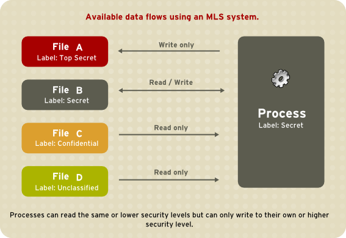

-domain error.
-serialization and aliasing.
-inadequate identification and authentication.
-boundary condition violation.
-other exploitable logic errors.
VIRUS REPLICATION
When the infected application or file runs in the computer, the virus activates and executes in the system. It continues to replicate and spread by attaching replicas of itself to other files and applications in the system.
Viruses
Viruses are self-replicating malicious code that attaches to macro-enabled programs to execute. These files travel via documents and other file downloads, allowing the virus to infiltrate your device. Once the virus executes, it can self-propagate and spread through the system and connected networks.
Worms
Worms are also self-replicating and self-spreading code like viruses but do not require any further action to do so. Once a computer worm has arrived on your device, these malicious threats can execute entirely on their own - without any assistance from a user-run program.
Trojans
Trojans are decoy files that carry malicious code payloads, requiring a user to use the file or program to execute. These threats cannot self-replicate or spread autonomously. However, their malicious payload could contain viruses, worms, or any other code.
Cross-site scripting (XSS)
Cross-site scripting interferes with the user's web browsing by injecting malicious commands into the web applications they may use. This often changes web content, intercepts confidential information, or serves an infection to the user's device itself. Backdoor attacks
Application backdoor access can be coded to give a cybercriminal remote access to the
compromised system. Aside from exposing sensitive data, such as private company information, a backdoor can allow an attacker to become an advanced persistent threat
WHAT IS MALICIOUS CODE AND HOW IT CASUES DAMAGE TO RESOURCES
Malicious code is harmful computer programming scripts designed to create or exploit system vulnerabilities. This code is designed by a threat actor to cause unwanted changes, damage, or ongoing access to computer systems. Malicious code may result in back doors, security breaches, information and data theft, and other potential damages to files and computing systems.
WHAT IS MALICIOUS CODE?
Malicious code is code inserted in a software system or web script intended to cause undesired effects, security breaches, or damage to a system. Taking advantage of common system vulnerabilities, malicious code examples include computer viruses, worms, Trojan horses, logic bombs, spyware, adware, and backdoor programs. Visiting infected websites or clicking on a bad email link or attachment are ways for malicious code to sneak its way into a system.
The most common form of malicious code is the computer virus, which infects a computer by attaching itself to another program and then propagating when that program is executed. Another common form is the worm, which makes copies of itself, spreading through connected systems and consuming resources on affected computers.
Malicious code is self-activating and takes on various forms, including Java Applets, ActiveX controls, pushed content, plug-ins, scripting languages, or other programming languages. By modifying, destroying, or stealing data, gaining or allowing unauthorized access to a system, and executing functions that a user never intended, malicious code can expose an organization’s systems, sensitive data, and valuable information assets. The ideal solution is self-protecting software that can defend itself from these kinds of vulnerabilities and attacks.
VIRUS AND ITS TYPES
A computer virus is a program which can harm our device and files and infect them for no further use. When a virus program is executed, it replicates itself by modifying other computer programs and instead enters its own coding. This code infects a file or program and if it spreads massively, it may ultimately result in crashing of the device.
Across the world, Computer viruses are a great issue of concern as they can cause billions of dollars’
worth harm to the economy each year.
Since the computer virus only hits the programming of the device, it is not visible. But there are certain indications which can help you analyse that a device is virus-hit. Given below are such signs which may help you identify computer viruses:
Speed of the System – In case a virus is completely executed into your device, the time taken to open applications may become longer and the entire system processing may start working slowly
Pop-up Windows – One may start getting too many pop up windows on their screen which may be virus affected and harm the device even more
Self Execution of Programs – Files or applications may start opening in the background of the system by themselves and you may not even know about them
Log out from Accounts – In case of a virus attack, the probability of accounts getting hacked increase and password protected sites may also get hacked and you might get logged out from all of them
Crashing of the Device – In most cases, if the virus spreads in maximum files and programs, there are chances that the entire device may crash and stop working
The first thing which you might notice in case of virus attack is the speed with which your system shall process. And then gradually other changes can also be observed.
Types of Computer Virus
Discussed below are the different types of computer viruses:
Boot Sector Virus – It is a type of virus that infects the boot sector of floppy disks or the Master Boot Record (MBR) of hard disks. The Boot sector comprises all the files which are required to start the Operating system of the computer. The virus either overwrites the existing program or copies itself to another part of the disk.
Direct Action Virus – When a virus attaches itself directly to a .exe or .com file and enters the device while its execution is called a Direct Action Virus. If it gets installed in the memory, it keeps itself hidden. It is also known as Non-Resident Virus.
Resident Virus – A virus which saves itself in the memory of the computer and then infects other files and programs when its originating program is no longer working. This virus can easily infect other files because it is hidden in the memory and is hard to be removed from the system.
Multipartite Virus – A virus which can attack both, the boot sector and the executable files of an already infected computer is called a multipartite virus. If a multipartite virus attacks your system, you are at risk of cyber threat.
Overwrite Virus – One of the most harmful viruses, the overwrite virus can completely remove the existing program and replace it with the malicious code by overwriting it. Gradually it can completely replace the host’s programming code with the harmful code.
Polymorphic Virus – Spread through spam and infected websites, the polymorphic virus are file infectors which are complex and are tough to detect. They create a modified or morphed version of the existing program and infect the system and retain the original code.
File Infector Virus – As the name suggests, it first infects a single file and then later spreads itself to other executable files and programs. The main source of this virus are games and word processors.
Spacefiller Virus – It is a rare type of virus which fills in the empty spaces of a file with viruses. It is known as cavity virus. It will neither affect the size of the file nor can be detected easily.
Macro Virus – A virus written in the same macro language as used in the software program and infects the computer if a word processor file is opened. Mainly the source of such viruses is via emails.
Types of malicious code
Many malicious code types can harm your computer by finding entry points that lead to your precious data. Among the ever-growing list, here are some common culprits.
Viruses are self-replicating malicious code that attaches to macro-enabled programs to execute. These files travel via documents and other file downloads, allowing the virus to infiltrate your device. Once the virus executes, it can self-propagate and spread through the system and connected networks.
Worms are also self-replicating and self-spreading code like viruses but do not require any further action to do so. Once a computer worm has arrived on your device, these malicious threats can execute entirely on their own — without any assistance from a user-run program.
Trojans are decoy files that carry malicious code payloads, requiring a user to use the file or program to execute. These threats cannot self-replicate or spread autonomously. However, their malicious payload could contain viruses, worms, or any other code.
Cross-site scripting interferes with the user’s web browsing by injecting malicious commands into the web applications they may use. This often changes web content, intercepts confidential information, or serves an infection to the user’s device itself.
Application backdoor access can be coded to give a cybercriminal remote access to the compromised system. Aside from exposing sensitive data, such as private company information, a backdoor can allow an attacker to become an advanced persistent threat (APT).
Cybercriminals can then move laterally through their newly obtained access level, wipe out a computer's data, or even install spyware. These threats can reach a high level: The U.S. Government Accountability Office has even warned about the threat of malicious code against national security.
WORM AND VIRUS
1. Worms :
Worms are similar to a virus but it does not modify the program. It replicates itself more and more to cause slow down the computer system. Worms can be controlled by remote. The main objective of worms is to eat the system
resources. The WannaCry ransomware worm in 2000 exploits the Windows Server Message Block (SMBv1) which is a resource-sharing protocol.
2. Virus :
A virus is a malicious executable code attached to another executable file that can be harmless or can modify or delete data. When the computer program runs attached with a virus it performs some action such as deleting a file from the computer system. Viruses can’t be controlled by remote. The ILOVEYOU virus spreads through email attachments.
HOW VIRUS ATTACH TO FILES
Depends on the virus, and on the type of file. Also, bear in mind that a "virus" technically describes a self-replicating form of malware - there are other forms of malware which can be concealed within files using similar techniques. So:
Executables: Most executable files are relatively sparse - there are big gaps between the legitimate code and data for various reasons. Can be for performance reasons, or to take advantage of compiler optimisations, or just because various compiler flags weren't set to squeeze the output size to the minimum. Some viruses take advantage of this, and insert their instructions in these gaps, which changes the resulting hash of the
file (note that a different hash means the contents are different, not just that the file size has changed). By hijacking the program entry point to execute the virus code before or instead of the legitimate code, a virus can be executed when the application is started.
Note that in this case, executable files include things like DLL files - they are essentially Windows executables which expose functions, rather than being self contained applications. There are some technical differences, but in terms of infection, they are pretty much identical - just hijack a call and make it point to your code rather than the original.
Linux executables are very similar, in having empty space, but the file system may also attempt to enforce rules as to whether specific files are treated as "executables" or "data", which can slightly complicated the issue.
Data files: Some data files, especially media files (images, sounds, videos), use a block structure, where a number of distinct types of data are stored in distinct blocks. For example, a PNG file is comprised of, at minimum, three "chunks": a header, the image data, and an end of file marker. In these files, it's often possible to add extra blocks using the correct form, and add arbitrary data: in a PNG file, this could be adding an "iTXt" chunk, which is just a block of Unicode text.
However, data files generally can't execute themselves, so there will normally be either a modified executable file as well, or a targeted flaw in a processing application. For example, if there was a command line image processing tool which took a folder of images and processed them in some way, it might be that a flaw could be found that meant by providing a specific input file it added data to all files in the folder processed after the "evil" file making them behave in the same way. This could be classified as virus-like behaviour, but wouldn't meet some definitions of a computer virus.
For some file types, it's valid to add data after the legitimate file content too. For example, JPEG files can still work if you simply append text files to them - exactly as your mental image. This could be used by a virus, but due to the the lack of executability, is unlikely to be the only part of a virus.
Other forms of malware make use of similar techniques: there are whole families of malware which are inserted into PHP files and then execute when someone accesses the related page. Ransomware is often distributed by hijacking Javascript files and adding malicious code to them. In these cases, though, the code isn't usually self-replicating, so doesn't meet all the technical details of being a virus.
How Viruses Gain Control
The virus (V) has to be invoked instead of the target (T). Essentially, the virus either has to seem to be T, saying effectively "I am T" or the virus has to push T out of the way and become a substitute for T, saying effectively "Call me instead of T." A more blatant virus can simply say "invoke me [you fool]."
The virus can assume T's name by replacing (or joining to) T's code in a file structure; this invocation technique is most appropriate for ordinary programs. The virus can overwrite T in storage (simply replacing the copy of T in storage, for example). Alternatively, the virus can change the pointers in the file table so that the virus is located instead of T whenever T is accessed through the file system. These two cases are shown in Figure 3-7.
The virus can supplant T by altering the sequence that would have invoked T to now invoke the virus V; this invocation can be used to replace parts of the resident operating system by modifying pointers to those resident parts, such as the table of handlers for different kinds of interrupts.
Write any four requirements for database security Physical database integrity
Logical database integrity Element Integrity Auditability
Access control User Authentication Availability
Element Integrity
The data contained in each element are accurate
Elucidate the approaches to multilevel security for databases,
Protecting sensitive or confidential data is paramount in many businesses. In the event such information is made public, businesses may face legal or financial ramifications. At the very least, they will suffer a loss of customer trust. In most cases, however, they can recover from these financial and other losses with appropriate investment or compensation.
The same cannot be said of the defense and related communities, which includes military services, intelligence organizations and some areas of police service. These organizations cannot easily recover should sensitive information be leaked, and may not recover at all. These communities require higher levels of security than those employed by businesses and other organizations.
Having information of different security levels on the same computer systems poses a real threat. It is not a straight-forward matter to isolate different information security levels, even though different users log in using different accounts, with different permissions and different access controls.
Some organizations go as far as to purchase dedicated systems for each security level. This is often prohibitively expensive, however. A mechanism is required to enable users at different security levels to access systems simultaneously, without fear of information contamination.
Why Multi-Level?
The term multi-level arises from the defense community's security classifications: Confidential, Secret, and Top Secret.
Individuals must be granted appropriate clearances before they can see classified information. Those with Confidential clearance are only authorized to view Confidential documents; they are not trusted to look at Secret or Top Secret information. The rules that apply to data flow operate from lower levels to higher levels, and never the reverse. This is illustrated below.
Figure 43.2. Information Security Levels
The Bell-La Padula Model (BLP)
SELinux, like most other systems that protect multi-level data, uses the BLP model. This model specifies how information can flow within the system based on labels attached to each subject and object. Refer to the following diagram:

Figure 43.3. Available data flows using an MLS system
Under such a system, users, computers, and networks use labels to indicate security levels. Data can flow between like levels, for example between "Secret" and "Secret", or from a lower level to a
higher level. This means that users at level "Secret" can share data with one another, and can also retrieve information from Confidential-level (i.e., lower-level), users. However, data cannot flow from a higher level to a lower level. This prevents processes at the "Secret" level from viewing information classified as "Top Secret". It also prevents processes at a higher level from accidentally writing information to a lower level. This is referred to as the "no read up, no write down" model.
MLS and System Privileges
MLS access rules are always combined with conventional access permissions (file permissions). For example, if a user with a security level of "Secret" uses Discretionary Access Control (DAC) to block access to a file by other users, this also blocks access by users with a security level of "Top Secret". A higher security clearance does not automatically give permission to arbitrarily browse a file system.
Users with top-level clearances do not automatically acquire administrative rights on multi-level systems. While they may have access to all information on the computer, this is different from having administrative rights.
Security Levels, Objects and Subjects
As discussed above, subjects and objects are labeled with Security Levels (SLs), which are composed of two types of entities:
Sensitivity: — A hierarchical attribute such as "Secret" or "Top Secret".
Categories: — A set of non-hierarchical attributes such as "US Only" or "UFO".
An SL must have one sensitivity, and may have zero or more categories.
Examples of SLs are: { Secret / UFO, Crypto }, { Top Secret / UFO, Crypto, Stargate } and { Unclassified }
Note the hierarchical sensitivity followed by zero or more categories. The reason for having categories as well as sensitivities is so that sensitivities can be further compartmentalized on a need-to-know basis. For example, while a process may be cleared to the "Secret" sensitivity level, it may not need any type of access to the project "Warp Drive" (which could be the name of a category).
Note
Security Levels on objects are called Classifications.
Security Levels on subjects are called Clearances.
Thus, objects are labeled with a Classification, while subjects operate with a specific Clearance. Security Levels can have also Ranges, but these are beyond the scope of this introduction.
MLS Policy
SELinux uses the Bell-La Padula BLP model, with Type Enforcement (TE) for integrity. In simple terms, MLS policy ensures that a Subject has an appropriate clearance to access an Object of a particular classification.
For example, under MLS, the system needs to know how to process a request such as: Can a process running with a clearance of { Top Secret / UFO, Rail gun } write to a file classified as { Top Secret / UFO } ?
The MLS model and the policy implemented for it will determine the answer. (Consider, for example, the problem of information leaking out of the Rail gun category into the file).
MLS meets a very narrow (yet critical) set of security requirements based around the way information and personnel are managed in rigidly controlled environments such as the
military. MLS is typically difficult to work with and does not map well to general-case scenarios.
Type Enforcement (TE) under SELinux is a more flexible and expressive security scheme, which is in many cases more suitable than MLS.
There are, however, several scenarios where traditional MLS is still required. For example, a file server where the stored data may be of mixed classification and where clients connect at different clearances. This results in a large number of Security Levels and a need for strong isolation all on a single system.
This type of scenario is the reason that SELinux includes MLS as a security model, as an adjunct to TE.
LSPP Certification
Efforts are being made to have Linux certified as an MLS operating system. The certification is equivalent to the old B1 rating, which has been reworked into the Labeled Security Protection Profile under the Common Criteria scheme.
Principles of fair information practice
What are the Fair Information Practice Principles (FIPPs)?
The Fair Information Practices, also known as the Fair Information Practice Principles (FIPPs), are a set of eight principles regarding data usage, collection, and privacy.
They were published in 1980 by the Organization for Economic Cooperation and Development (OECD) and a number of countries agreed upon them in principle.
Although not officially part of any privacy legislation, these principles continue to be relevant and influential today. Many organizations use them as guidance for how to handle personal data. Several of the principles listed in the FIPPs are included in important privacy frameworks like the General Data Protection Regulation
(GDPR) and the California Consumer Privacy Act (CCPA). The eight Fair Information Practice Principles are:
Collection Limitation Principle. There should be limits to the collection of personal data and any such data should be obtained by lawful and fair means and, where appropriate, with the knowledge or consent of the data subject.
Data Quality Principle. Personal data should be relevant to the purposes for which they are to be used, and, to the extent necessary for those purposes, should be accurate, complete and kept up-to-date.
Purpose Specification Principle. The purposes for which personal data are collected should be specified not later than at the time of data collection and the subsequent use limited to the fulfillment of those purposes or such others as are not incompatible with those purposes and as are specified on each occasion of change of purpose.
Use Limitation Principle. Personal data should not be disclosed, made available or otherwise used for purposes other than those specified in accordance with [the Purpose Specification Principle] except: a) with the consent of the data subject; or b) by the authority of law.
Security Safeguards Principle. Personal data should be protected by reasonable security safeguards against such risks as loss or unauthorized access, destruction, use, modification or disclosure of data.
Openness Principle. There should be a general policy of openness about developments, practices and policies with respect to personal data. Means should be readily available of establishing the existence and nature of personal data, and the main purposes of their use, as well as the identity and usual residence of the data controller.
Individual Participation Principle. An individual should have the right:
to obtain from a data controller, or otherwise, confirmation of whether or not the data controller has data relating to him;
to have communicated to him, data relating to him within a reasonable time; at a charge, if any, that is not excessive; in a reasonable manner; and in a form that is readily intelligible to him;
to be given reasons if a request made under subparagraphs (a) and
(b) is denied, and to be able to challenge such denial; and
to challenge data relating to him and, if the challenge is successful to have the data erased, rectified, completed or amended.
Accountability Principle. A data controller should be accountable for complying with measures which give effect to the principles stated above.
Steps to Protect Against Privacy Loss
So take these simple steps to protect your valuable personal information.
The more information you share online, the easier it’s going to be for someone to get their hands on it. Don’t cooperate.
Take a look at your social media profiles and keep them barren—the people who need to know your birth date, email address and phone number already have them. And what exactly is the point of sharing everything about yourself in your Facebook profile? If you care about your privacy, you won’t do it.
Think twice about sharing your social security number with anyone, unless it’s your bank, a credit bureau, a company that wants to do a background check on you or some other entity that has to report to the IRS. If someone gets their hands on it and has information such your birth date and address they can steal your identity and take out credit cards and pile up other debt in your name.
Even the last four digits of your social security number should only be used when necessary. The last four are often used by banks an other institutions to reset your password for access your account.
Plus, if someone has the last four digits and your birth place, it’s a lot easier to guess the entire
number. That’s because the first three are determined by where you, or your parents, applied for your SSN. And the second set of two are the group number, which is assigned to all numbers given out at a certain time in your geographic area. So a determined identity thief with some computing power could hack it given time.
Set up your PC to require a password when it wakes from sleep or boots up. Sure, you may trust the people who live in your house, but what if your laptop is stolen or you lose it?
Same thing with your mobile devices. Not only should you use a passcode to access them every time you use them, install an app that will locate your phone or tablet if it’s lost or stolen, as well as lock it or wipe it clean of any data so a stranger can’t get access to the treasure trove of data saved on it.
And, make sure your computers and mobile devices are loaded with anti-malware apps and software. They can prevent prevent criminals from stealing your data. We recommend Norton Internet Security ($49.99 on norton.com or $17.99 on Amazon) in our computer security buying guide or stepping up to Norton 360 Multi-Device ($59.99 on norton.com or $49.99 on Amazon) if you have mobile devices. And, you’ll want to double up your protection on Android devices by installing , since we found anti-malware apps are dismal at detecting spyware.
If you don’t want anyone with physical access to your computer to see where you’re hanging out online you should enable “private browsing,” a setting available in each major web browser. It deletes cookies, temporary Internet files and browsing history after you close the window.
Every company that advertises online is interested in knowing what sites you visit, what you buy, who you’re friends with on social networks, what you like and more. By gathering information about your online activities they can serve you targeted ads that are more likely to entice you to buy something.
For instance, the Facebook, Twitter, and Google+ buttons you see on just about every site allow those networks to track you even if you don’t have an account or are logged into them. Other times information collection companies rely on embedded code in banner ads that track your visits, preferences, and demographic information.
If you truly care about your privacy you’ll surf the Internet anonymously by hiding your IP address. You can do this using a web proxy, a Virtual Private Network (VPN) or Tor, a free open network that works by routing your traffic through a series of servers, operated by volunteers around the world, before sending it to your destination.
Most people know better than to use the same password for more than one website or application. In reality, it can be impossible to remember a different one for the dozens of online services you use. The problem with using the same password in more than one place is if someone gets their hands on your password—say, through a phishing attack—they can access all your accounts and cause all sorts of trouble.
To eliminate this dilemma, use a password manager that will not only remember all your passwords, but will generate super strong and unique ones and automatically fill them into login fields with the click of a button.
LastPass is an excellent and free choice.
You can lock down your Facebook, Google, Dropbox, Apple ID, Microsoft, Twitter and other accounts with two-factor authentication. That means that when you log in, you’ll also need to enter a special code that the site texts to your phone. Some services require it each time you log in, other just when you’re using a new device or web browser. The Electronic Frontier Foundation has a great overview of what’s available.
Two-factor authentication works beautifully for keeping others from accessing your accounts, although some people feel it’s too time consuming. But if you’re serious about privacy, you’ll put up with the friction.
According to Business Insider, credit card companies are selling your purchase data to advertisers. Don’t want companies knowing how much booze you’re buying or other potentially embarrassing habits? Buy things the old fashioned way—with coins and bills.
Check your Facebook settings and make sure only friends can see what you’re doing. Go to the settings cog in the upper right hand corner of your screen, then click on Privacy Settings >> Who can see my stuff.
On Twitter, click on the settings cog, then Settings. From there you can adjust all sorts of privacy settings, such as a box that gives Twitter permission to add your location to tweets as well as the ability to make your tweets private, meaning only people you approve can see them. You can also stop the microblogging platform from tailoring your Twitter experience based on other sites you visit.
If you use Google+, go to Home >> Settings. There you can adjust things like who can interact with you, comment on your posts or start a conversation with you.
Often stores will ask for your zip code when you’re checking out with a credit card. Don’t give it to them unless you want to donate your details to their marketing database, warns Forbes. By matching your name, taken from your credit card, with your zip code, companies can more easily mine more information, including your address, phone number and email. address.
“What is your mother’s maiden name?” or “In what city were you born?” are common questions websites often ask you to answer so as to supposedly keep your account safe from intruders. In reality, there’s nothing secure about such generic queries. That’s because someone who wants access to your account could easily do some Internet research to dig up the answers.
Not sure you can remember your lies? You can create “accounts” in your password manager just
for this purpose.